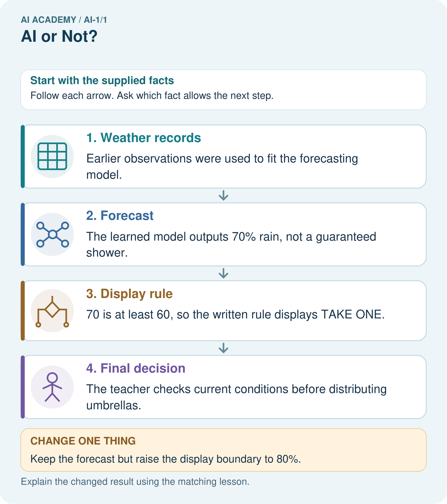
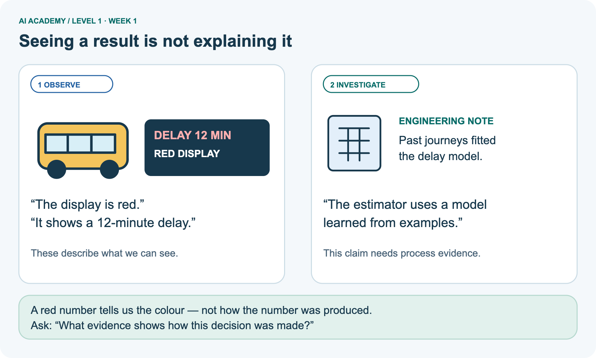
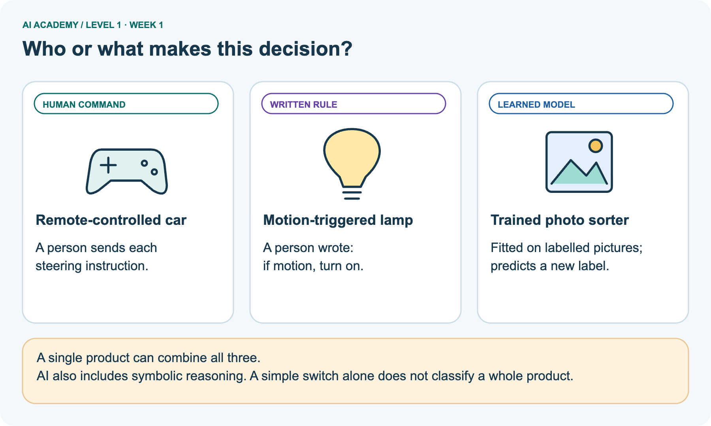
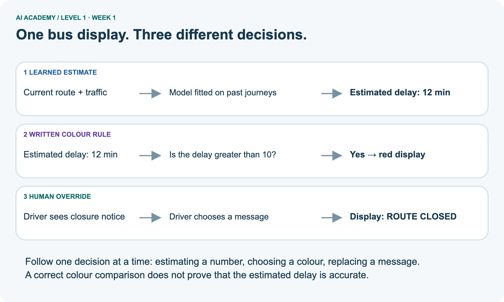
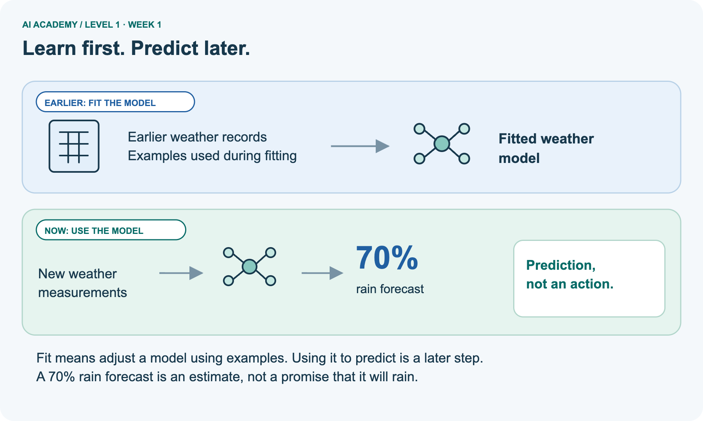
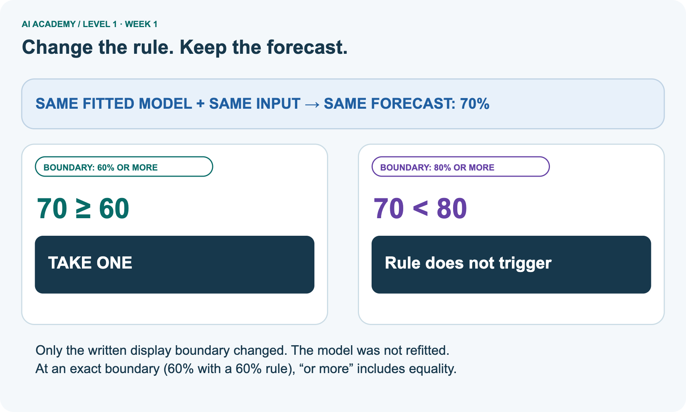
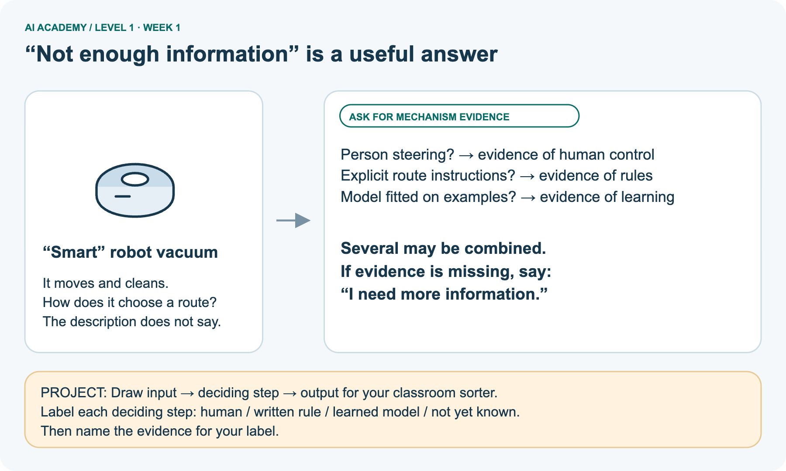

AI Academy · Level 1 · Grade 6 · Week 1 · Workbook
AI or Not?
Learn to understand, design, build, test and explain AI systems responsibly.
Project: Helpful Classroom Sorter
THE CONNECTED WEEK
One week. One connected evidence record.
Use the main worksheets in order. The reference bank contains alternative copies and extra practice, so you can choose support without repeating the whole week.
Keep one habit: Keep your first attempt, the evidence behind it and the correction you can explain.
Main lesson · Section 1
Start: what did you observe?
Try before notes; keep your later correction visible.
The speaking-clock puzzle
Try the recall before opening notes. Then use a different colour or a labelled second line to correct your explanation.
A classroom clock speaks the time. Write one thing you observed and one thing you cannot determine just from hearing it.
Main lesson · Section 12
W1 · Separate seeing from explaining
Use the door case to separate an observation from a question about its mechanism.
Read, then explain
A door opens when a visitor approaches. Its label says intelligent entrance. List two observations and write one mechanism question whose answer would help classify the opening decision.
Main lesson · Section 13
W2 · Trace the photo-library decisions
Use the supplied facts to classify each decision and choose a useful diagnostic record.
The case facts
Given facts: a photo library uses a model fitted on labelled pictures to predict whether a new picture contains a bicycle. A written instruction puts bicycle predictions in one album. The owner can move any photo. A bicycle photo is in the wrong album; the reason has not yet been identified.
Your trace and diagnosis
Use the photo-library case from the lesson. Classify the prediction, album-placement rule and owner move. A bicycle photo is in the wrong album. Name the first two records you would inspect.
Main lesson · Section 14
W3 · Explain two possible mechanisms
One observed turn can have more than one explanation. Name evidence that would distinguish them.
The vacuum challenge
Maya says a vacuum must learn because it changes direction after hitting a chair. Give two different mechanisms consistent with that observation. What evidence would distinguish them?
Main lesson · Section 4
W4 · Apply the idea independently
The greenhouse is a new case. Write one first attempt before feedback.
Read the new case, then explain
A school greenhouse estimates tomorrow's temperature using a model fitted on historical weather. A written rule displays CHECK PLANTS above 30 degrees C. A caretaker chooses whether to open a vent.
Identify each mechanism and explain why a correct CHECK PLANTS message would not prove an accurate temperature prediction.
Keep a fair record
Attempt this case before feedback. Record any help. Earlier examples below are further practice; a case already practised with feedback cannot establish fresh transfer.
Earlier wording and repeated headings
Independent case: Investigate a new hybrid system
Main lesson · Section 16
W5 · Design an evidence card
Build one example that lets another person check your claim.
Create and justify
Invent one product containing two mechanisms. State the supplied facts, draw an information path and write one claim the facts support and one they do not. Do not use real classmates' personal information.
Main lesson · Section 9
Project · Choose your sorter’s mechanism
Make one decision and attach the evidence behind it.
Your design choice
Choose whether the Helpful Classroom Sorter needs a person, fixed rule, or learned model; justify the smallest safe solution.
The project change and evidence I will keep
Main lesson · Section 17
Feedback · Repair and return
Keep your first attempt, the repair and a different case to revisit.
Your learning record
| Evidence | My record |
|---|---|
| Worked alone / hint / model | |
| First step I repaired and why | |
| New case checked later; date and result | |
| What I can now explain without notes | |
| One remaining question |
Revisit this idea with your teacher after a delay. Familiarity is different from explaining and using it on a changed case.
Main lesson · Section 10
Finish · Check what you can explain
Judge each item using work you can point to.
Your self-check
- I can explain the mechanism.
- I can show evidence.
- I can handle a changed case.
- I can name a limit.
Mark each as not yet, with help or independently, and attach supporting work.
Teacher review ____________________ Next step ____________________
Reference bank and extra practice
Choose the reference that helps your next step.
Reference · Record the help you used
Reference · Section 2
Reference · Record the help you used
This supplements W2; do not repeat the same completed explanation.
Use this when helpful
Use W2: Complete the photo library explanation for Evidence and decision mechanisms. Record the answer once; the lesson and workbook refer to the same attempt.
| Given inputs | Procedure I chose | Middle steps | Result and check |
|---|---|---|---|
Extra practice · Are all rules outside AI?
Reference · Section 3
Extra practice · Are all rules outside AI?
Try the claim before discussing it.
Use this when helpful
Use the worked case for Evidence and decision mechanisms. Proposed explanation: “All rules are outside AI”. Decide whether this explanation is supported.
Point to the step or supplied fact that decides; explain your repair if needed.
Reference · The bus learning target
Reference · Section 5
Reference · The bus learning target
Use the bus explanation as a reminder, not a second independent assessment.
Use this when helpful
A bus displays a delay prediction learned from past journeys. A written rule turns the display red above 10 minutes. A driver can override the message. Identify all three mechanisms.
Would seeing a red display prove that learning occurred?
Extra practice · Device detective record
Reference · Section 6
Extra practice · Device detective record
Use these cards and this response space if you choose the six-device investigation.
Use this when helpful
Six devices are a motion-triggered lamp, a trained photo sorter, a remote-controlled car, a calculator, an unspecified smart speaker and an unspecified robot vacuum.
Classify all six using mechanism evidence. Which two need more information?
Show your trace, calculation or evidence
Extra practice · Toy, photo app and clock
Reference · Section 7
Extra practice · Toy, photo app and clock
Use this as a later changed case.
Use this when helpful
A toy follows your steering buttons. A photo app learned from labelled pictures. A talking clock follows a written timetable. Which uses a learned model? What evidence supports each classification?
My answer and reason
Week 1 Test and reflect
Extra practice · Design a revealing test
Reference · Section 8
Extra practice · Design a revealing test
Keep predicted and observed results separate.
Use this when helpful
Create a changed input, boundary case or missing-information case. Write the expected answer or safe response before testing.
| Test record | My evidence |
|---|---|
| Changed input or condition | |
| Expected answer or fallback | |
| Observed result | |
| Why the result occurred |
Reference · Revisit the bus question
Reference · Section 11
Reference · Revisit the bus question
This bus question has already been used in teaching; record it as practice.
Use this when helpful
A bus displays a delay prediction learned from past journeys. A written rule turns the display red above 10 minutes. A driver can override the message. Identify all three mechanisms.
Would seeing a red display prove that learning occurred?
Record support used: none, hint or teacher explanation.
Reference · Greenhouse response copy
Reference · Section 15
Reference · Greenhouse response copy
This is the same W4 case. Reuse its first-attempt record.
Use this when helpful
A school greenhouse estimates tomorrow's temperature using a model fitted on historical weather. A written rule displays CHECK PLANTS above 30 degrees C. A caretaker chooses whether to open a vent.
Identify each mechanism and explain why a correct CHECK PLANTS message would not prove an accurate temperature prediction.
Extra practice · Read the umbrella picture
Reference · Section 18
Extra practice · Read the umbrella picture
Explain the stage and its changed boundary.
Use this when helpful
A fictional school umbrella display shows TAKE ONE before lunch. What produced that advice?
A weather model was fitted on earlier weather records; its forecast is 70% rain.
A written rule shows TAKE ONE at rain forecasts of 60% or more. The teacher decides whether to distribute umbrellas.



Point to the learned stage. Does the changed display prove the weather forecast changed?
Support used: alone / hint / worked example. This record is practice evidence.
Project connection: For the Helpful Classroom Sorter, annotate which decisions follow written instructions and which, if any, were fitted from examples.
Reference · Sorter portfolio record
Reference · Section 19
Reference · Sorter portfolio record
Use alongside your main project response when you need a fuller record.
Use this when helpful
Project: Helpful Classroom Sorter
Current milestone: Frame the need. Name the user, the problem, allowed inputs and a safe simple starting method.
For the Helpful Classroom Sorter, annotate which decisions follow written instructions and which, if any, were fitted from examples.
| Evidence to keep | My record |
|---|---|
| This week’s input and deciding step | |
| Prediction and actual result (or labelled paper trace) | |
| One change since the previous checkpoint and why | |
| One error or limit and the next test |
Extra practice · Supported questions
Reference · Section 20
Extra practice · Supported questions
Choose the paper or interactive version, and compare with feedback after trying.
First supported question
A fictional school umbrella display shows TAKE ONE before lunch. What produced that advice?
Which labelled step matches this detail? The teacher checks current conditions before distributing umbrellas.
1. Weather records
2. Final decision
3. Display rule
4. Forecast
Hint if needed: Read the steps in the pictorial case. Match the supplied detail to the stage that performs or records it.
Practice 1: explain the deciding evidence
Check after trying
After your attempt, compare with the supported explanation: Final decision The teacher checks current conditions before distributing umbrellas. The fitting record supports calling the forecasting stage learned.
Comparing 70 with 60 is an explicit rule. The final action belongs to a person. Merely seeing TAKE ONE would not reveal any of these mechanisms; the process notes supply that evidence.
Changed boundary question
Changed-case practice: Keep the forecast but raise the display boundary to 80%. Which conclusion is supported by the supplied facts?
1. This one example guarantees correct results for every future input.
2. The display no longer says TAKE ONE.
3. We can decide the result without examining the changed input or the procedure.
Hint if needed: Use the changed condition and the deciding step in the pictorial trace. The answer must say what follows from those facts.
Practice 2: explain the deciding evidence
Check after trying
After your attempt, compare with the supported explanation: The display no longer says TAKE ONE. 70 is below 80; changing a display rule does not refit the model.
What you will keep
This is the starting lesson. Ask your teacher to model one observation, one written rule and one deciding step, then try your own example.
Use Download completed work in the hosted lesson to export your answers, reflections, practice feedback and code-run evidence. Open the HTML copy to read or print it.
Drafts stay in this browser when storage is available; clear drafts on a shared device.
Earlier prompts and notes
Use this supported practice once, in the browser or on paper. Keep the reserved independent assessment for a separate first attempt before teacher feedback.
Repair a missing building block
Keep your completed work
Reference · Six-picture response sheets
Reference · Section 21
Reference · Six-picture response sheets
Choose a relevant picture; completing all six is optional.
01. Seeing a result is not explaining it



A bus has a red display showing a 12-minute delay. That is an observation. A supplied engineering note says past journeys fitted the delay model; that is evidence about its mechanism.
Name one observation and one claim that needs more evidence.
02. Who or what makes this decision?



A remote-controlled car follows human commands, a motion lamp follows a written rule, and a trained photo sorter applies a learned model. A product can combine mechanisms. AI also includes symbolic reasoning.
Point to who or what makes each decision.
03. One bus display. Three different decisions.



Three separate rows trace the bus estimate, display colour and driver override. The fitted model estimates 12 minutes; the written greater-than-10 rule makes the display red; the driver can choose ROUTE CLOSED.
Trace the number, colour and override separately.
04. Learn first. Predict later.



Earlier weather records are used to fit a model. Later, new measurements are passed to that fitted model to obtain a 70 percent rain forecast. It is an estimate, not a guarantee.
Which steps use earlier examples, and which use a fitted model?
05. Change the rule. Keep the forecast.



With a 70 percent rain forecast, a 60 percent-or-more rule displays TAKE ONE. An 80 percent-or-more rule does not trigger that message. Only the boundary changed; the fitted model and forecast did not.
Keep the forecast fixed at 70%. What changes when the boundary becomes 80%?
06. “Not enough information” is a useful answer



An unspecified smart robot vacuum moves and cleans, but its route mechanism is unknown. Ask for evidence of human commands, written rules or model fitting, and allow combinations. Apply this reasoning to a classroom sorter.
Which evidence would change your answer about the vacuum?